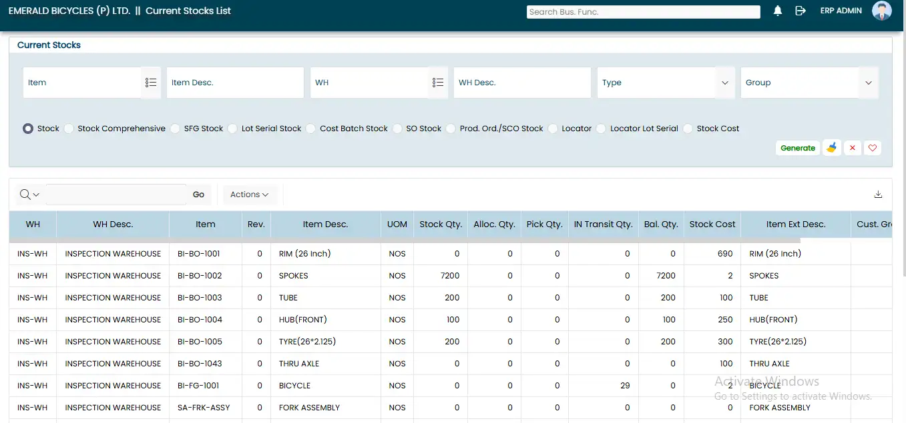

<div data-category="Inventory Control" data-title="Stocks" data-updated="January 27, 2026" data-contributors="RoadmapIT" data-breadcrumb="Home,Inventory Control,Stocks">
  <div class="page-content">
    <p>Stock refers to the complete assortment of materials and products that an organization holds in storage. These items are kept on hand either to be used in the production process or to be sold directly to customers.</p>
    <p>Stocks of all the Items at various levels (Standard / Semi finished, Lot Serial, Cost Batch, Locator, Order wise, Locator Lot Serial) present in various warehouses of business units are viewed in the Stocks screen</p>
    <h5>Navigation path:</h5>
    <p class="fs-6">Supply Chain Management \ Inventory \ Reports \ Current Stocks List</p>
    
    <ul style="list-style-type: none; align-content: center">
      <li class="mouse-icon">Select the relevant radio button and click on Generate button, to display the stock levels of the items in various warehouses.</li>
    </ul>
  </div>
</div>
